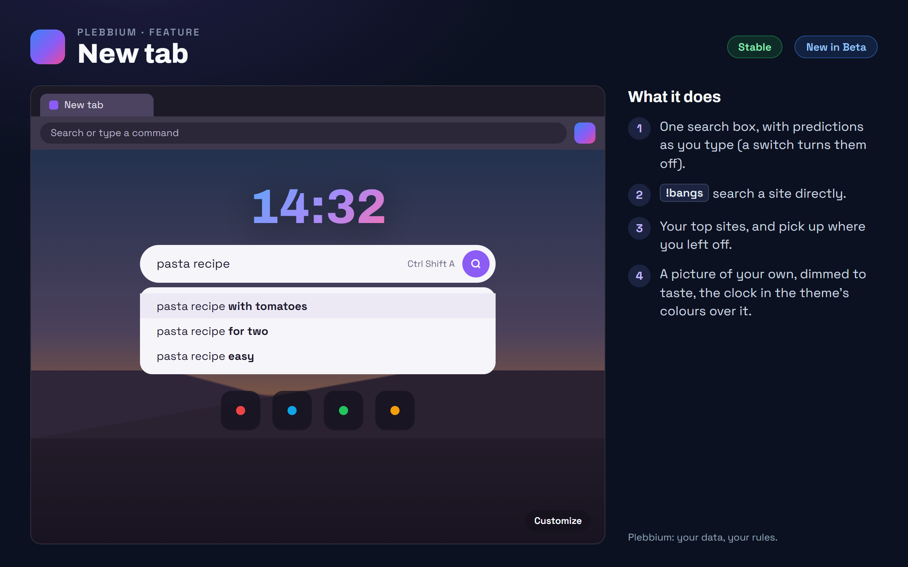

All features › Shipped › New tab
New tab
StableNew in Betasince 3604A calm new tab: a clock, one search box with predictions as you type and a search button, !bangs, your top sites, pick up where you left off, and a background picture of your own, dimmed to taste.

How to use it
- Search: type, then pick a prediction or press Enter or the search button.
- Search a site directly: start with a !bang.
- A background picture: Customize, bottom right › choose one from your computer, then set how dim it is.
- Predictions off: Plebbium settings › New tab.
- A plain white clock: Plebbium settings › Appearance › White clock. Customize › Reset to default takes the picture away and goes back to Violet.
When it arrived
156.0.8078.360418 Oct 2026 · Beta and Stable
The new tab.
156.0.8078.361222 Oct 2026 · Beta and Stable
Search predictions, a search button and a background picture of your own.
156.0.8078.3614Beta 26 Oct 2026 · not on Stable yet
The clock keeps the theme's colours on your picture; White clock for plain white; Reset to default in Customize.
Why it works this way
Predictions send only what you type
The one thing on the new tab that uses the network: only the box's text goes, without cookies, and never an address, a bang or a question for an AI.
Your picture, kept on your PC
Only your own picture, never one fetched from the web; it is resized and kept on that PC.